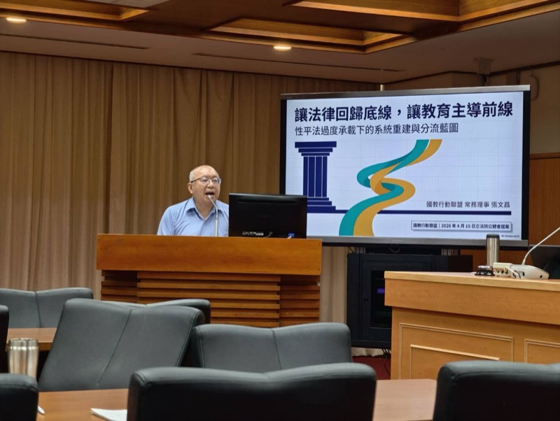

性平法該不該無限擴張？國教盟三大修法主張守住教育本位
30 秒看懂重點是什麼？
- 核心觀點：性平法自 2004 年立法、歷經 2023 年大幅修法後，已從教育法演變為同時處理課程、調查、懲處與跨法銜接的複合型法律，出現定義混淆、功能過載與程序膨脹三大副作用。
- 關鍵數據：新制自 2024 年 3 月 8 日上路後，現場回饋出現「寧可全報不敢漏報」氛圍；監察院 2023 年調查亦點出承辦能量不足、程序對當事人造成壓力等問題。
- 行動呼籲：國教盟主張(1) 釐清四個概念邊界、(2) 建立案件分級分流機制、(3) 讓法律回到教育本位、把性健康與情感教育獨立成課程。

為什麼性平法在 2023 年修法後反而變得更難執行？
性別平等教育法自 2004 年 6 月 23 日公布施行[3]，其立法背景可追溯至 2000 年屏東高樹國中葉永鋕事件。當時的性平法任務非常清楚：促進性別地位實質平等、消除性別歧視、維護人格尊嚴，並建立校園性侵害、性騷擾處理的基本程序。
自立法以來，性平法歷經 2010、2011、2013、2018、2022、2023 共六次修正。2023 年修正版於 2023 年 8 月 16 日公布、部分條文自 2024 年 3 月 8 日施行[1]，主要變革包括擴大受規範對象（含校長、教職員工、與學生具指導關係之人員）、強化權勢關係之認定、調整調查程序與專家資料庫制度、加強重新任用與通報機制、並銜接跟蹤騷擾防制法、性侵害犯罪防治法、家庭暴力防治法等。
從立法沿革可以觀察到：二十年間，性平法從「教育與平等」出發，逐步疊加「事件處理」「行政懲處」「通報協調」「跨法銜接」等多種功能，最終成為一部同時處理課程、事件、懲處與銜接的複合型法律（廖元豪，2024）[4]。這是一個現象，但會帶來結構性問題：不同功能的邏輯相互競爭（教育要支持陪伴、事件處理要公正、懲處要正當程序），最後往往是一種邏輯壓過其他。
「性別平等」「性教育」「情感教育」四個層次為什麼必須分開？
這是國教盟診斷的第一個核心問題：定義混淆。就學理與政策實務而言，以下四個層次必須分別處理，卻在現行政策語言中被一概納入「性別平等教育」這把大傘（羅燦煐，2019；黃昭元，2021）[5]：
第二層 性教育／性健康教育：身體界線、避孕、性傳染病預防、風險辨識、自我保護。
第三層 情感教育：關係建立、拒絕與被拒絕、分手暴力預防、情緒調節、尊重自主。
第四層 校園性別事件處理：對已發生事件之公正調查與救濟。
當家長、教師、學生、媒體聽到「性平」一詞，腦中浮現的可能是反歧視、可能是避孕教學、可能是情感教育，也可能是性騷擾調查。同一個詞指向不同事，必然造成政策執行的失焦。這也使家長對教材的疑問，經常被一概視為「反對性別平等」，實際上許多家長真正的關切是性健康教育是否適齡、清楚、符合發展階段[6]。
更嚴重的是結果面：近年青少年對避孕、性傳染病、身體界線、網路風險的正確知識比例並未明顯改善[7]；親密關係暴力與分手暴力案件亦未因性平教育內容擴大而顯著下降[8]。台灣性教育學會亦表示，目前教育體制中其實已具備相當豐富的性平相關課綱與學習內容，問題不在課程不足，而在沒有落實且缺乏跨領域合作——健康教育科由於非考科，加上少子化，許多學校不聘健康教育教師，導致專長授課比例極低；性平案件行為人須接受的八小時性別平等教育，往往只是「湊時數」而未依行為人需求規劃，失去教育意義[16]。這指向：問題不在教太多，而在沒分清楚到底在教什麼、也沒有真正教到位。
強制通報與程序膨脹如何把校園推向準司法化？
這是第三個核心問題：程序的膨脹。現行規範要求教職員工知悉疑似案件應於 24 小時內通報，且未通報可能涉及行政責任與罰鍰[1]。在責任壓力下，這使第一線教師通常選擇「先通報再說」，而不是先與當事人共同釐清狀況。結果是大量邊界案件——教學設計爭議、師生溝通不良、同儕人際衝突——被一律升高為正式性平調查。
監察院 2023 年〈校園性別事件處理機制調查報告〉指出[2]，現行機制下承辦人、委員、調查員負荷過重，專業訓練難以跟上。台灣性教育學會亦表示，性平案件類型多元（包括性騷擾、青少年未預期懷孕、性嬉戲、過度追求、非合意性交等），需要不同專業背景的調查人員，但目前調查人才數量與專業多元性皆不足，可能因案量大而延誤進度或簡化細節；加上生教組長等承辦人多為兼任、流動率高且缺乏法律專業，面對複雜案件壓力極大，亟需主管機關提供更多法律諮詢資源[16]。當學校大量資源被吸入調查而非預防，教師對深度師生互動愈來愈保守，甚至出現所謂「Pence Rule 效應」——為了避嫌，教師寧可減少與學生的個別互動（Elsesser, 2019）。這反而削弱真正需要師長陪伴的學生所獲得的支持。
全國教師工會總聯合會 2024 年〈性平法新制上路一年教師意見調查〉亦反映相似現場焦慮[9]。國教盟的立場是：不是反對處理案件，而是反對把所有問題都用辦案方式處理。校園不是法院，教育不能只剩調查與懲處。
國際上是怎麼處理校園事件與性健康教育的分工？
國教盟並不主張全面仿效任一國家，但透過比較法觀察，確認了三件事：其他先進國家在擴張或緊縮同意原則時皆有明確的程序保障與教育配套；校園個案處理與性健康／情感教育，在多數國家屬於不同法令與課綱系統；強制通報與正當程序之間各國都有明確的分級機制。
美國 Title IX：2020 年教育部最終規則對校園性騷擾處理程序訂出書面通知、交叉詢問、獨立裁決者等正當程序要求。2024 年新規則試圖擴張範圍，但 2025 年 1 月在 State of Tennessee v. Cardona 案遭判決撤銷，2020 年規則再度成為主要準據[10]。啟示是：即使以被害人保護為主軸，程序正義仍是底線。
加拿大：加拿大刑法自 1992 年起明文規範同意之定義與撤回同意之效力，最高法院於 R. v. Ewanchuk（1999）確立同意必須是「真正的、當下的、有意願的」原則。但加拿大並未將所有校園性別互動爭議皆刑法化，而是透過刑法、行政規範與學校政策三層分工共同處理。啟示是：同意原則的確立並不等於所有爭議都要走正式程序，分層與分工才是成熟的制度設計。
英國 RSHE：英國教育部 2020 年正式將 Relationships, Sex and Health Education 列入中小學法定課綱，以獨立之課綱、教材規範與家長參與機制推行，與校園事件處理的通報調查機制分屬不同軌道[11]。
瑞典消極同意：瑞典 2018 年修正 Penal Code Ch.6 §1 引入消極同意模式。瑞典國家犯罪預防委員會 2025 年的五年評估顯示，強姦罪起訴率約上升 七成，但同時出現證據取得、受害者心理負擔加重等副作用[12]。啟示是：同意原則的強化必須伴隨訴訟輔助、心理支持與教育補位。
芬蘭、澳洲：芬蘭國家教育署將性健康教育納入基礎教育課綱，分齡、漸進、以健康素養為主軸[13]；澳洲將關係與性教育整合於 Health and Physical Education 學科。OECD 2023 年國際比較顯示，凡以獨立課程形式推行性健康教育的國家，青少年性健康指標改善較為明顯[14]。
國教盟三項修法主張具體要改什麼？
基於前述三大診斷與國際比較，國教盟提出以下三項核心修法主張，對應性平法再校準的三個方向：
主張一：釐清概念邊界
於修法或子法層次明確分列性別平等教育、性健康教育、情感教育、校園性別事件處理四個概念，不再用同一把大傘承載。性健康由國家課綱獨立規範、師資獨立培育；情感教育納入家庭教育法架構。
主張二：案件分級分流
重大案件（性侵害、權勢壓迫、高風險跟蹤）維持正式調查並移送；中度案件（一般騷擾、界線不清之互動）簡化程序並加入修復式會談；輕度案件（教學爭議、玩笑話、誤解）回到輔導與溝通先行。台灣性教育學會表示可參考國外經驗建立「紅黃綠燈」行為檢核工具：綠燈／黃燈屬發展性好奇或輕微不當行為，以教育輔導為主；紅燈屬嚴重性騷擾、性侵害，才啟動正式調查程序。
主張三：讓法律回到教育本位
性平法守住安全、平等與事件處理的底線；性健康、情感教育、家長參與、心理輔導則由獨立課程、師資培育、家庭教育法與跨部會平台共同承擔。建立教育、衛福、文化、數位四部會青少年性健康與數位安全推動平台。
一部法律可以規範不能做什麼，卻不一定能教孩子怎麼好好相處。法律可以處理事後責任，卻不能取代事前教育。如果我們持續把性平法當成青少年教育的萬靈丹，最後只會得到越來越多案件，而不是越來越健康的孩子。 ——國教行動聯盟 理事長 王瀚陽，〈0415 立法院公聽會書面報告〉（2026）
家長與教師常見問題 FAQ？
Q1：國教盟是反對性別平等嗎？
不是。國教行動聯盟明確支持反歧視、反霸凌、保障人格尊嚴與平等受教權，反對的是把所有青少年性健康、情感關係、數位風險與親師摩擦都塞進性平法、一律用辦案與懲處處理的制度傾向。
Q2：2023 年性平法修法到底改了什麼？
2023 年性平法大幅修正並自 2024 年 3 月 8 日施行，擴大受規範對象（含校長、教職員工、具指導關係之人員）、強化權勢關係認定、細緻化調查程序、加強通報義務，並明確與跟騷法、性侵害犯罪防治法等跨法銜接。
Q3：什麼是校園準司法化？為什麼這是問題？
準司法化指校園處理事件愈來愈像法院辦案：定義擴張、強制通報優先、正式調查取代輔導。後果是承辦人負荷爆表、資源從預防被吸到個案、教師為了避嫌減少互動，反而削弱真正需要陪伴的學生所獲得的支持。
Q4：案件分級分流是什麼意思？會不會放過加害人？
分級分流不是放過，而是依案件性質決定程序密度。重大案件（性侵害、權勢壓迫、高風險跟蹤）維持正式調查並移送；中度案件簡化程序並加入修復式會談；輕度案件（玩笑話、課程爭議）優先回到輔導與溝通，讓每種案件以最合適方式處理。
Q5：性健康教育、情感教育跟性平教育有什麼不同？
性別平等教育處理反歧視；性健康教育處理身體界線、避孕、性病預防；情感教育處理關係建立、拒絕與被拒絕、分手情緒；校園性別事件處理則是對已發生事件的調查。四者相關但不相同，英國、芬蘭、澳洲都以獨立課綱與課程時數推行。台灣性教育學會亦表示，性平教育不應只談法律條文與權力關係，應回歸情感關係教育，並加強健康與體育領域、綜合領域的跨領域合作。
Q6：為什麼老師會擔心「寧可全報、不敢漏報」？
現行規範要求教職員工知悉疑似案件須於 24 小時內通報，未通報可能涉及行政責任與罰鍰。在責任壓力下，第一線教師在不確定狀況時往往選擇「先通報再說」，結果即使案件最終不成立，當事人、教師、家長與學校都已承受巨大壓力。
Q7：國教盟對立法院的三項具體主張是什麼？
第一，釐清性別平等教育、性健康教育、情感教育、校園性別事件處理四個概念邊界；第二，建立案件分級分流制度，依風險程度決定程序密度；第三，讓法律回到教育本位，將性健康、情感教育、家長參與以獨立課程與跨部會合作補上。
參考文獻（APA 第 7 版）
- 性別平等教育法（2023 修正公布，部分條文自 2024 年 3 月 8 日施行）。全國法規資料庫。https://law.moj.gov.tw/LawClass/LawAll.aspx?pcode=H0080067
- 監察院（2023）。校園性別事件處理機制調查報告。監察院。https://www.cy.gov.tw/
- 性別平等教育法（2004 公布）。全國法規資料庫。https://law.moj.gov.tw/LawClass/LawHistory.aspx?pcode=H0080067
- 廖元豪（2024）。性平法再校準：過度承載下的制度檢討。政大法學評論，175，1-52。
- 羅燦煐（2019）。性別平等教育的理論與實務。華藝學術出版。
- 國教行動聯盟（2025b）。關於性別平等教育課程與教材之家長觀察報告。國教行動聯盟。https://www.facebook.com/twedumove/
- 疾病管制署（2024）。青少年性健康與性傳染病監測報告。衛生福利部。https://www.cdc.gov.tw/
- 衛生福利部保護服務司（2024）。親密關係暴力與家庭暴力統計年報。衛生福利部。https://dep.mohw.gov.tw/dops/
- 全國教師工會總聯合會（2024）。性平法新制上路一年教師意見調查報告。全教總。https://www.nftu.org.tw/
- U.S. Department of Education. (2020). Nondiscrimination on the basis of sex in education programs or activities receiving federal financial assistance (Final Rule). 85 Fed. Reg. 30026; U.S. Department of Education. (2025). Notice regarding Title IX regulations following State of Tennessee v. Cardona. https://www.ed.gov/laws-and-policy/civil-rights-laws/title-ix
- Department for Education (UK). (2020). Relationships education, relationships and sex education (RSE) and health education: Statutory guidance. UK Government. https://www.gov.uk/government/publications/relationships-education-relationships-and-sex-education-rse-and-health-education
- Brå (Swedish National Council for Crime Prevention). (2025). The 2018 consent law: A five-year evaluation. Brå Report 2025:3. https://www.bra.se/
- Finnish National Agency for Education. (2016). National core curriculum for basic education 2014 (English translation). FNAE. https://www.oph.fi/en/statistics-and-publications/publications/national-core-curriculum-basic-education
- OECD. (2023). Education at a Glance 2023: Gender equity and comprehensive sexuality education. OECD Publishing. https://www.oecd.org/education/education-at-a-glance/
- 國教行動聯盟、台灣性教育學會（2025）。性健康與情感教育獨立課程倡議書。https://www.facebook.com/twedumove/
- 台灣性教育學會（2026）。針對性別平等教育法修法方向之三點訴求。台灣性教育學會。